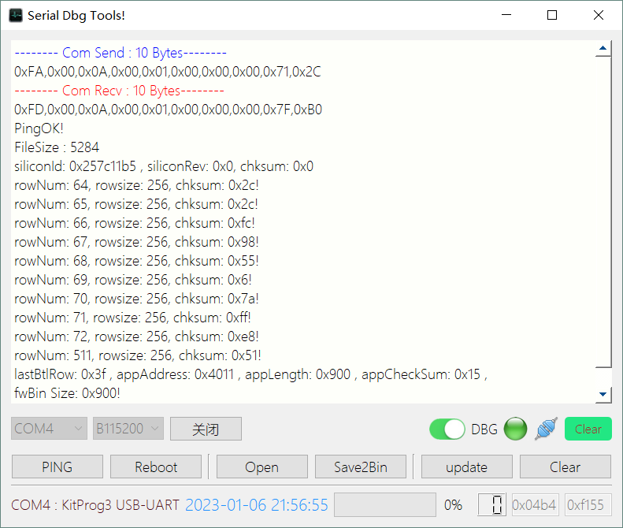
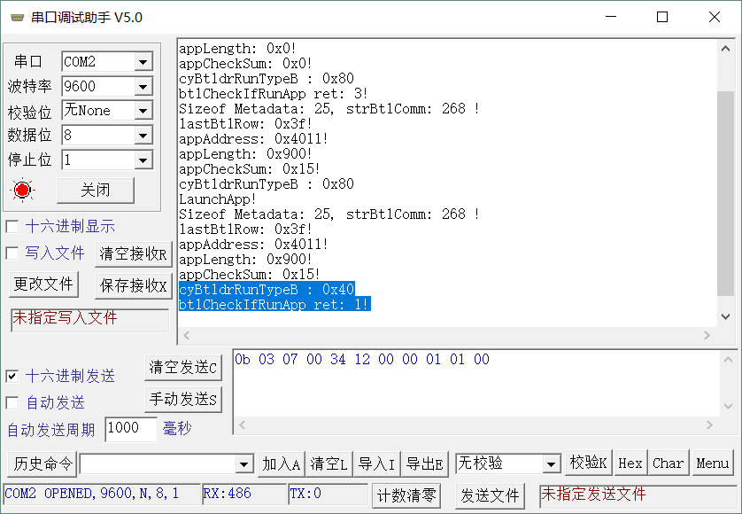

PSoC4 Bootloader and Bootloadable
参考文档：Infineon-AN68272 - PSoC_4…_UART_Bootloader-ApplicationNotes-v16_00-EN.pdf
参考这篇文档很容易就可以实现PSoC uart的bootloader和bootloadable，So…这不是今天的主角，今天的主角是简单的、能看的懂的自实现的uart bootloader，并且可以引导运行bootloadable APP。
一、先简单过一遍官方的Bootloader和Bootloadable：
- 实现： 实现过程很简单，只要分别在各自的工程中加入Bootloader和Bootloadable控件即可。
- 共享：Bootloader和Bootloadable共享变量：cyBtldrRunType。
- 从Btl跳转至App … 这有点复杂，所有相关操作均在Bootloader.c中，2900+行，兼容各种PSoC 3、4、5，读起来晦涩难懂，这就是为什么要自己实现个BTL，稍后再记录它吧。
- 从App跳转至Bootloader的实现：调用 Bootloadable_Load() 即可。
void Bootloadable_Load(void)
{
/* Schedule Bootloader to start after reset */
Bootloadable_SET_RUN_TYPE(Bootloadable_SCHEDULE_BTLDR); //Set cyBtldrRunType
CySoftwareReset(); //软复位
}
#define Bootloadable_SET_RUN_TYPE(x) (cyBtldrRunType = (x))
#define Bootloadable_SCHEDULE_BTLDB (0x80u)
#define Bootloadable_SCHEDULE_BTLDR (0x40u)
#define Bootloadable_SCHEDULE_MASK (0xC0u)
// Set cyBtldrRunType = Bootloadable_SCHEDULE_BTLDR;
Bootloadable生成的文件格式说明：参考AN68272 Append B，
.elf ： 包含各种调试信息的文件。
.hex ：合并了bootloader、meta区的整个文件，可用于生产。
.cyacd：包含一个header line和诸多flash line，
Header line: [4 Bytes Silicon ID] + [1Byte Silicon rev] + [1Byte checksum type]
Flash line: [1 Byte Array ID] + [2 Bytes row number] + [2Bytes data length] + [N Bytes data] + [1 Byte checksum]
checksum type: 0 - 和校验，1 - CRC-16
Metadata: 位于flash最后一行的最后64字节，PSoC4的格式如下：
//metadata struct
#pragma pack(1) //按字节对齐
typedef struct
{
uint8_t appCheckSum; //B0
uint32_t appAddress; //B1~B4
uint32_t lastBtlRow; //B5~B8
uint32_t appLength; //B9~B0C
uint8_t NA1; //B0D
uint8_t NA2; //B0E
uint8_t NA3; //B0F
uint8_t appActive; //B10
uint8_t appVerified; //B11
uint8_t btlVersion; //B12
uint16_t appID; //B13~B14
uint16_t appVersion; //B15~B16
uint16_t appCustomID; //B17~B18
}strMetadata; //__attribute__((aligned(1)))
#pragma pack () - Bootloadable生成的.cyacd格式中，最后一行的flash data数据，就是如上的mata数据。其中：appLength、appCheckSum、appAddress等是bootloader用于校验app及跳转app的地址。
- PSoC工程有如下几种类型，通过CYDEV_PROJ_TYPE定义工程类型。
#define CYDEV_PROJ_TYPE_STANDARD 0
#define CYDEV_PROJ_TYPE_BOOTLOADER 1
#define CYDEV_PROJ_TYPE_LOADABLE 2
#define CYDEV_PROJ_TYPE_MULTIAPPBOOTLOADER 3
#define CYDEV_PROJ_TYPE_LOADABLEANDBOOTLOADER 4
#define CYDEV_PROJ_TYPE_LAUNCHER 5
#define CYDEV_PROJ_TYPE 2二、手写一个 Uart Bootloader：
在之前的UART的工程上，增加协议、flash操作、跳转app前的校验及跳转函数即可。具体的请参考工程源码。下面是几点注意的地方：
由于是普通工程（未包含Bootloader组件），所以CYDEV_PROJ_TYPE被定义为 CYDEV_PROJ_TYPE_STANDARD = 0。这个影响了cyBtldrRunType：普通工程中未定义该变量。如果CYDEV_PROJ_TYPE不为0，则会在Cm0plusStart.c中定义该变量。
App-Bootloadable的cm0plusgcc.ld连接文件中，将cyBtldrRunType链接至bootloaderruntype段：
// Bootloadable - cm0plusgcc.ld __attribute__ ((section(".bootloaderruntype"))) volatile uint32 cyBtldrRunType; .ramvectors (NOLOAD) : ALIGN(8) { __cy_region_start_ram = .; KEEP(*(.ramvectors)) } .btldr_run (NOLOAD) : ALIGN(8) { KEEP(*(.bootloaderruntype)) } .noinit (NOLOAD) : ALIGN(8) { KEEP(*(.noinit)) }而普通工程中并没有 .btldr_run 段，ramvectors下接着就是noinit段。
// CYDEV_PROJ_TYPE = CYDEV_PROJ_TYPE_STANDARD - cm0plusgcc.ld .ramvectors (NOLOAD) : ALIGN(8) { __cy_region_start_ram = .; KEEP(*(.ramvectors)) } .noinit (NOLOAD) : ALIGN(8) { KEEP(*(.noinit)) }尝试过在cm0plusgcc.ld中手动插入btldr_run段，clean & rebuild后又被清掉，此路不通。
但是：可以定义一个变量cyBtldrRunTypeB放在noinit段中，查看并对比生成的map文件：
// CYDEV_PROJ_TYPE = CYDEV_PROJ_TYPE_STANDARD - cm0plusgcc.ld CY_NOINIT volatile uint32_t cyBtldrRunTypeB; //CY_NOINIT 段是和Bootloadable段地址一样 .noinit 0x200000b0 0x4 *(.noinit) .noinit 0x200000b0 0x4 .\CortexM0p\ARM_GCC_541\Debug\btl.o 0x200000b0 cyBtldrRunTypeB //Bootloadable .btldr_run 0x200000b0 0x4 *(.bootloaderruntype) .bootloaderruntype 0x200000b0 0x4 .\CortexM0p\ARM_GCC_541\Debug\Cm0plusStart.o 0x200000b0 cyBtldrRunTypecyBtldrRunType 和 cyBtldrRunTypeB都位于0x200000b0地址。
这样在APP中调用Bootloadable_Load() 函数，会设置cyBtldrRunType = Bootloadable_SCHEDULE_BTLDR，软复位后进入自定义的Bootloader，通过访问相同地址的cyBtldrRunTypeB并判断是否为Bootloadable_SCHEDULE_BTLDR即可。
跳转：跳转参考官方Bootloader中实现：
/* Moves argument appAddr (RO) into PC, moving execution to appAddr */ #if defined (__ARMCC_VERSION) __asm static void CustomBootloader_LaunchBootloadable(uint32 appAddr) { BX R0 ALIGN } #elif defined(__GNUC__) __attribute__((noinline)) /* Workaround for GCC toolchain bug with inlining */ __attribute__((naked)) static void CustomBootloader_LaunchBootloadable(uint32 appAddr) { __asm volatile(" BX R0\n"); } #elif defined (__ICCARM__) static void CustomBootloader_LaunchBootloadable(uint32 appAddr) { __asm volatile(" BX R0\n"); } #endif /* (__ARMCC_VERSION) */ CustomBootloader_LaunchBootloadable(meta->appAddress); //校验通过 直接跳到APP区跳转地址需要注意：
CustomBootloader_LaunchBootloadable(meta->appAddress); //校验通过 直接跳到APP区
跳转的地址不是设置的APP起始地址，而是meta区中存储的appAddress，比如在Bootloadable组件中，选择Manual application image placement: 0x00004000 , App从Flash 16KB地址开始，但是存储在meta->appAddress中的值并不是0x00004000 ，而是偏移了0x11个字节 - 0x4011，所以跳转必须要使用meta中存储的该地址。
跳转时需要使用meta->appAddress的值，但是校验APP的checksum时，需要从Manual application image placement地址开始，比如0x4000，长度为meta->appLength。
uint8_t sum = 0; uint8_t * p = (uint8_t *)STARTAPP_ADDR; for(uint32_t i=0;i < meta->appLength; i++) { sum += p[i]; } sum = ( uint8_t )1u + ( uint8_t )(~sum); if(sum != meta->appCheckSum) return 6;
三、 PC APP
- 官方提供了Bootloader Host软件，位于D:\Cypress\PSoC Creator\4.4\PSoC Creator\bin目录下，测试使用官方的Bootloader和Bootloadable组件，可以使用该软件测试bootloader.
- 同时也提供了相关的参考代码，位于： D:\Cypress\PSoC Creator\4.4\PSoC Creator\cybootloaderutils目录下。参考cybtldr_parse.c实现cyacd格式的解析。
- UART协议未使用官方协议，改成我之前用过的简单协议，上位机在之前的串口程序中修改了一个，用于读取并解析.cyacd格式的app文件，并支持将app存储为纯BIN文件，方便使用其他工具升级。
- 注：PC APP暂不支持中文路径。

可以看到如下信息：
Silicon ID：0x257C1175，校验和为普通SUM校验。
Flash Line信息：ROW Num64 ~ ROW Num72，为Flash Data。
ROW Num 511 ： MetaData。
串口调试信息：

- 首次烧录Boot时，运行Bootloader程序。
- 通过PC更新过APP后，通过Reboot命令让Bootloader复位重启，运行APP程序。
- 可以看出appAddress： 0x4011
- 手动按下按键，从App中再跳到bootloader中，此时由于cyBtldrRunTypeB = 0x40，又留在了bootloader中。
欢迎留言交流，稍后更新源码下载地址。